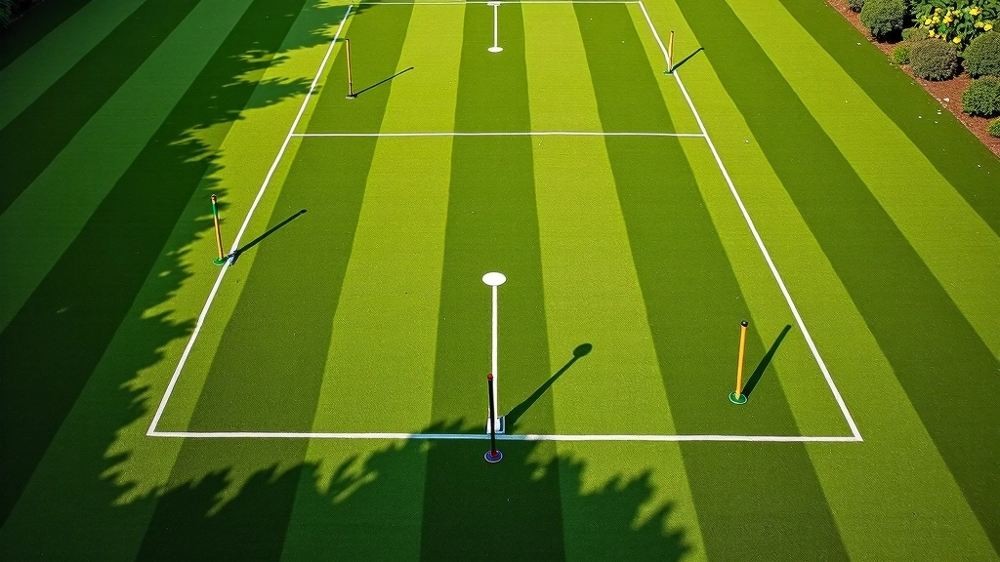

أسئلة شائعة حول استراتيجية التقشير والترك
إجابات واضحة ومباشرة عن أكثر الأسئلة التي يطرحها لاعبو الكروكيه
يعتمد هذا على خبرتك الحالية في الكروكيه. إذا كنت لاعباً جديداً، ستحتاج إلى حوالي 6-8 أسابيع من الممارسة المنتظمة لفهم المبادئ الأساسية والبدء في تطبيقها بثقة على الملعب. اللاعبون ذوو الخبرة الذين يريدون تحسين تقنياتهم قد يشهدون نتائج أسرع.
نعم، المبادئ الأساسية للتقشير والترك عالمية، لكن التطبيق يختلف حسب حالة الملعب. الملاعب السريعة تتطلب حسابات زوايا أدق، بينما الملاعب البطيئة تحتاج إلى قوة ضربة أكبر. أدلتنا تغطي كيفية تعديل استراتيجيتك حسب ظروف اللعب المختلفة.
التقشير البسيط يركز على فصل الكرة عن مسار اللعب الرئيسي. التقشير المتقدم يتضمن سلسلة حركات مخطط لها مسبقاً تضعك في موضع تنافسي قوي. يتطلب التقشير المتقدم قراءة أعمق للملعب وتوقع أفضل لحركات الخصم.
اختر الكرة التي تترك لك أكثر الخيارات المرنة على الملعب. غالباً ما تكون هذه الكرة الأقرب إلى الحواجز أو البوابات، أو الكرة التي تضع خصمك في وضع دفاعي. في المباريات التنافسية، انظر إلى أي كرة يخشى خصمك أن تتحرك.
تقريباً. اللاعبون الهجوميون سيجدونها طبيعية، لكنها أيضاً أداة قوية للاعبين الدفاعيين الذين يريدون السيطرة على الملعب. الأمر لا يتعلق بنمطك، بل بفهمك لكيفية قراءة الملعب واتخاذ القرار الصحيح في الوقت المناسب.
حدائق المنتزه بالإسكندرية توفر ملاعب ممتازة للممارسة العملية. نوصي بزيارة الملعب خلال الأوقات الهادئة حتى تتمكن من التركيز على تقنيتك دون ضغط من مباريات رسمية. التطبيق الفعلي على الملعب هو ما يحول المعرفة إلى مهارة حقيقية.

لم تجد إجابة لسؤالك؟
تواصل معنا مباشرة وسنساعدك في فهم أي جانب من استراتيجيات الكروكيه
اتصل بنا الآن